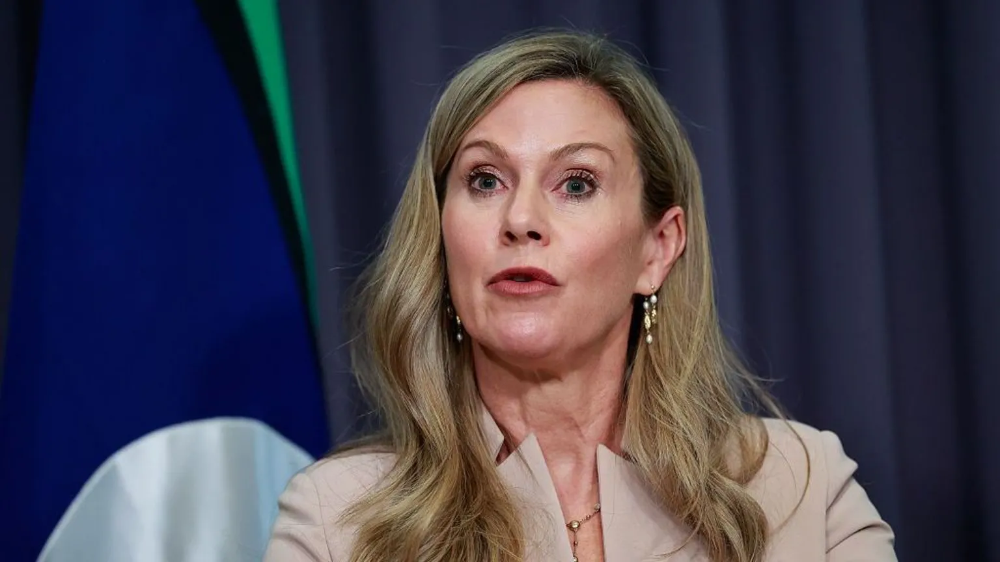

| Home | world | Pakistan | Business | Science | Sports | Technology | Entertainment | Health | Trending | Contact |
|---|

Australia's online safety regulator has found "significant gaps" in how popular gaming platforms protect children online.
In a new report it found inconsistent approaches in how Steam, Roblox, Fortnite and Minecraft implement child safety measures as research shows nine out of 10 children aged 8 to 17 in Australia have played online games.
"Australian children have a right to play online without being exposed to predators, sexual extortionists, violent extremist content or other harmful material," eSafety Commissioner Julie Inman Grant said.
Roblox said it "prioritises the safety of our Australian community, especially the youngest users". The other platforms have been contacted for comment.
Weak safety on platforms allow "predatory adults" to make contact with children before grooming them, Inman Grant said, for sexual exploitation or radicalisation.
The report found that Valve - the US gaming giant that owns Steam and Steam Chat - was the only provider that did not use a type of technology widely used by the industry to detect and remove known harmful content.
Valve also did not "proactively" use tools to detect child sexual exploitation or violent material in chats, with current systems mainly flagging scams, the report found.
Roblox, along with Valve, were noted in the report as using only internal datasets to train language detection systems and for not regularly retraining these models.
"We expect these services to lift their game to identify and combat serious harms such as child sexual exploitation, sexual extortion and material and activity which promotes, incites or instructs violence," Inman-Grant said.
Minecraft and Fortnite, which does offer child accounts, generally let users self-declare their age, the report highlighted, meaning anyone who said they were adults could access "higher-risk communication features".
Steam also relied on users self-declaring their age but the report acknowledged the platform had recently introduced age checks using credit cards, and that Roblox had put in stronger age checks since last December.
Another issue raised by the report was the inconsistent manner in which the four gaming platforms shared information and participated in industry initiatives.
Mojang Studios, developer of Minecraft, and Roblox shared industry expertise in combating child sexual exploitation as well as violent extremism online, but Valve did not.
Elsewhere, Fortnite maker Epic Games failed to share instances of breaches with other platforms under a global programme that was designed to combat online child sexual exploitation and abuse.
The report was based on information collected by Australia's eSafety Commission on how the platforms were protecting users from serious online harm between October 2025 and March 2026.
Australia has made global headlines in recent years for its stance on online safety, after it introduced its world-leading social media ban for under-16s last December - which did not include gaming platforms - and a more recent push to force tech giants to offer users a chance to opt-out of social media algorithms.
A spokesperson for Roblox said it had "invested heavily" in its safeguards for children which include mandatory age checks.
Valve, Fortnite, and Microsoft - which owns Minecraft - have been contacted for comment.